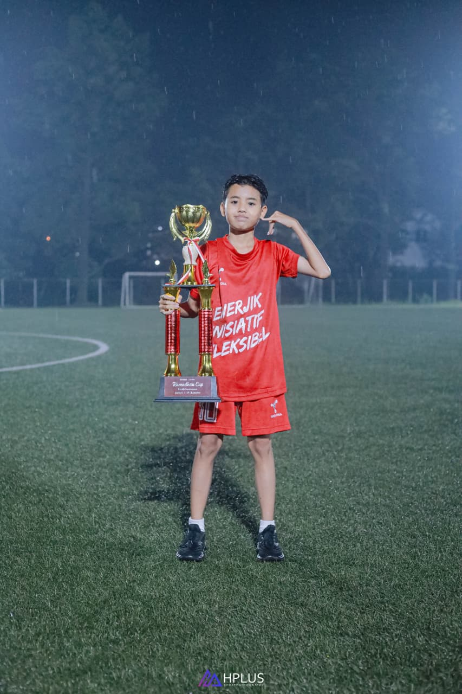
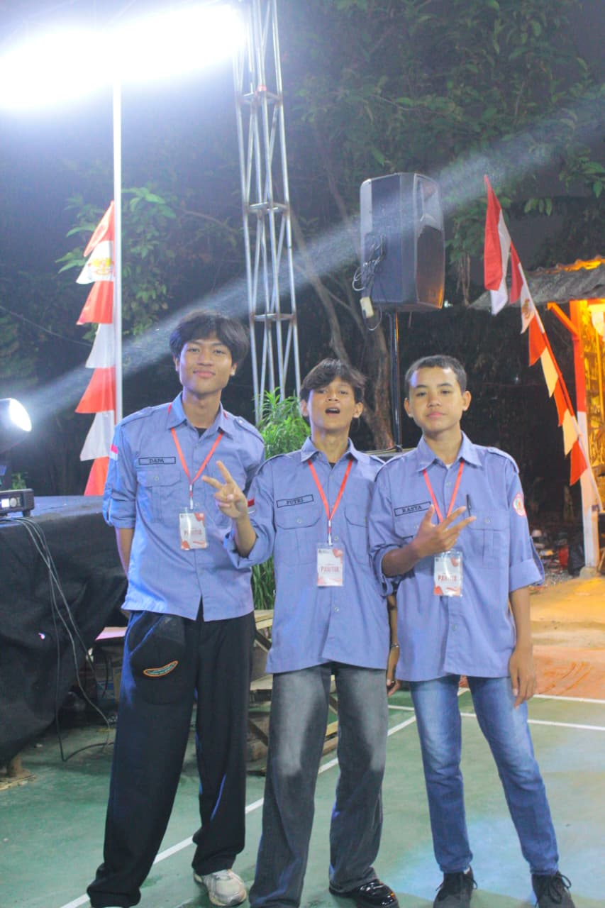

Rasya Raditya
XI RPL 2
ABOUT ME
Halo, saya Rasya Raditya. Saya lahir di Tangerang Selatan pada tanggal 14 Juli 2010. Saya tinggal di Pamulang bersama keluarga saya. Saya sekolah di SMK Negeri 6 Kota Tangerang Selatan jurusan RPL atau Rekayasa Perangkat Lunak.
Perjalanan pendidikan saya dimulai dari PAUD selama 2 tahun di Mutiara Education. Saat masih kecil, saya sering bermain dengan teman-teman menggunakan permainan tradisional seperti gundu atau kelereng, petak umpet, polisi maling, bekel, gambaran, karet, tapak gunung, dan permainan lainnya.

Foto di atas adalah pengalaman pertama saya mengikuti sebuah acara Agustusan. Saya juga baru pertama kali mengikuti organisasi di lingkungan masyarakat.
Pengalaman ini sangat berharga bagi saya karena saya menjadi lebih mengenal warga sekitar. Saya juga ikut membantu meminta dana untuk acara Agustusan kepada warga RT 01/RW 03, baik yang tinggal di kontrakan maupun rumah pribadi.
Pendidikan Agama Islam · Budi Pekerti
Menepati janji adalah sikap memenuhi janji yang telah dibuat kepada orang lain. Sikap ini menunjukkan kejujuran, tanggung jawab, dan membuat kita dipercaya oleh orang lain.
Mensyukuri nikmat adalah sikap berterima kasih kepada Allah Swt. atas segala nikmat yang telah diberikan. Bersyukur dapat dilakukan dengan mengucapkan Alhamdulillah dan menggunakan nikmat dengan baik.
ENGLISH ASSIGNMENT
THE IMPORTANCE OF HAVING BREAKFAST
BREAKFAST GIVES US ENERGY AND IMPROVES FOCUS
BREAKFAST IS AN IMPORTANT PART OF A HEALTHY ROUTINE
SICH VORSTELLEN · PERKENALAN DIRI
Hallo, mein Name ist Rasya Raditya. Ich bin Schüler der Klasse XI RPL 2. Ich wohne in Pamulang. Mein Hobby ist Fußball spielen. Ich lerne gerne Programmierung und Computer. Ich möchte später Informatik studieren.
Halo, nama saya Rasya Raditya. Saya adalah siswa kelas XI RPL 2. Saya tinggal di Pamulang. Hobi saya adalah bermain sepak bola. Saya suka belajar pemrograman dan komputer. Saya ingin kuliah di jurusan Teknik Informatika.
KIRIM PESAN KEPADA SAYA